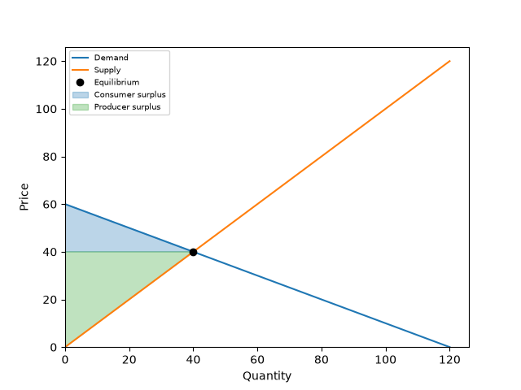
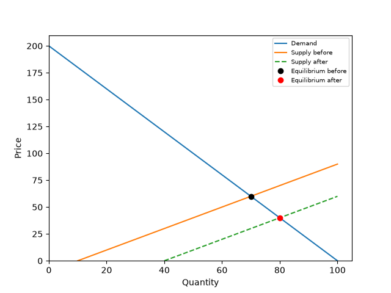

第 1 章: 1 次関数と市場メカニズム¶
1.1 この章の地図¶
経済学の教科書には、数式がたくさん出てきます。式を目で追っても、「わかったつもり」になりやすいのが、数学の難しいところです。この連載では、式を Python の関数にして、手計算できる値をテストの期待値にし、数値とグラフで確かめます。式が合っているかどうかを、自分のコードで判定できるようになります。
この連載の見取り図は、次のとおりです。
| 部 | 題材 | 数学 |
|---|---|---|
| 第 1 部（第 1〜4 章） | 市場・独占・お金の時間価値 | 1 次関数、2 次関数、指数・対数、数列 |
| 第 2 部（第 5〜8 章） | 利潤・効用の最大化 | 微分、ベクトル、偏微分 |
| 第 3 部（第 9〜12 章） | 回帰・リスク・オークション・成長 | 行列、確率、積分、漸化式 |
最初の章は、いちばん基本の道具、1 次関数です。需要も供給も、まず直線で表します。2 本の直線の交点が市場均衡で、2 本の直線と価格で囲まれた三角形の面積が余剰です。

| 項目 | 内容 |
|---|---|
| 経済学の題材 | 需要・供給、市場均衡、消費者余剰・生産者余剰、需要の集計、豊作貧乏、単位あたり費用が一定のケース |
| 数学 | 関数と変数、比例関数、1 次関数（直線）の式、連立方程式、三角形の面積 |
| 使う Python の機能 | 関数、タプル、dataclass、テスト（pytest） |
| 新しく導入するライブラリ | Matplotlib（図。第 1 シリーズ の第 7 章で学習済み） |
| 完成形 | line_through、demand_quantity、supply_quantity、Equilibrium、equilibrium、consumer_surplus、producer_surplus、total_surplus、market_demand、constant_cost_equilibrium |
| ファイル | 実装: lib/chapter01/market.py、lib/chapter01/plot.py（図）／テスト: test/chapter01/test_market.py、test/chapter01/test_plot.py（自分で書くときは、practice/chapter01/ に、同じ名前で作ります） |
| データ | なし（手計算できる小さな例だけ） |
数学の式とコードの対応¶
| 経済学・数学 | 式 | コード |
|---|---|---|
| 直線（傾きと切片） | y = 傾き × x + 切片 | line_through(first, second) |
| 需要（価格が上がると、需要量が減る） | q = a − b·p（b > 0） | demand_quantity(price, a, b) |
| 供給（価格が上がると、供給量が増える） | q = c + d·p（d > 0） | supply_quantity(price, c, d) |
| 市場均衡（需要量 ＝ 供給量） | p* = (a − c) ÷ (b + d)、q* = a − b·p* | equilibrium(a, b, c, d) |
| 消費者余剰 | 需要曲線の下で、価格の上の三角形の面積 | consumer_surplus(price, a, b) |
| 生産者余剰 | 価格の下で、供給曲線の上の面積 | producer_surplus(price, c, d) |
| 需要の集計 | 個人の需要量を、価格ごとに足す | market_demand(price, individuals) |
| 費用が一定のケース | 供給は水平。価格 ＝ 単位あたり費用 | constant_cost_equilibrium(a, b, unit_cost) |
記号について: a・b は需要、c・d は供給の係数です。この章では、価格 p を、グラフの縦軸に、数量 q を、横軸に描きます。式は q = a − b·p（数量を価格で表す）と書き、グラフは p を縦軸にします。向きが逆に見えますが、同じ直線です（第 1 部の全章で、この約束を使います）。
前提とする第 1 シリーズの章¶
この連載は、Python の基礎を繰り返しません。次ができれば、読み進められます。
| できること | 第 1 シリーズの章 |
|---|---|
| 関数と pytest のテストを書く（Red → Green → Refactor） | 第 1〜6 章 |
| リスト・タプル・内包表記を使う | 第 2〜4 章 |
| Matplotlib で、折れ線グラフを描く | 第 7 章 |
高校数学の 1 次関数（傾きと切片）と、連立方程式を、一度は学んだ方を想定しています。忘れていても、1.4 節で思い出せます。
需要・供給・余剰の経済学としての意味（調整過程・課税の効果など）は、ミクロ経済学のためのプログラミング（初級）の第 8 章 と 第 9 章 で扱います。この章は、そこで使う数学（直線・連立方程式・三角形の面積）を、関数とテストで確かめます。独立して読めるように、この連載は、自分のコードで書き、ほかの連載のコードを import しません。
1.2 準備¶
サンプルコードは、リポジトリの apps/math-for-economics-programming/python/ にあります。uv のインストールは、第 1 シリーズの第 1 章 を参照してください。
cd apps/math-for-economics-programming/python
uv sync
uv run pytest test/chapter01
44 passed
自分でコードを書くときは、practice/chapter01/ を作って、完成形と同じ名前（market.py・test_market.py）のファイルに書きます。テストは、uv run pytest practice/chapter01 で動かします。テストの import は、from lib.chapter01.market import ... を、from practice.chapter01.market import ... に書き換えてください（書き換えないと、完成形を読み込んで、最初から通ってしまい、Red になりません）。完成形（lib/ と test/）は、答え合わせ用です。 自分で書き終えてから、開いてください。
「予想の答え合わせ」のスクリプトは、practice/chapter01/check.py に保存し、アプリのディレクトリ（apps/math-for-economics-programming/python）で uv run python -m practice.chapter01.check と実行します（python practice/... と、ファイルのパスで実行すると、lib（import を書き換えたあとは practice）が見つからず、ModuleNotFoundError になります。-m で、モジュールとして実行してください。自分のコードを確かめるときは、スクリプトの import を from practice.chapter01... に書き換えます。Windows のシェルで、日本語が文字化けするときは、PYTHONUTF8=1 を付けます）。
1.3 予想する¶
次の 4 つの問いに、紙で、手計算で答えてください。答えは、この節には書いてありません。「プログラミング」の節の「予想の答え合わせ」で、プログラムを動かして確かめます。
- ある財の需要が q = 120 − 2p、供給が q = p のとき、均衡の価格と数量は、いくつですか。そのときの消費者余剰と生産者余剰（どちらも三角形の面積）は、いくつですか
- 2 点 (10, 5) と (20, 15) を通る直線の、傾きと切片は、いくつですか
- 2 人の消費者がいます。A の需要は q = 60 − p、B の需要は q = 40 − p です。価格が 30 のとき、価格が 50 のとき、市場全体の需要量は、それぞれ、いくつですか。市場の需要曲線は、価格が 40 のところで、傾きが変わります。なぜですか
- 需要が q = 100 − 0.5p、供給が q = 10 + p の市場で、均衡の価格・数量と、売り手の収入（価格 × 数量）を求めてください。豊作で、供給が q = 40 + p に増えたとき、価格・数量・収入は、どうなりますか。収入は、増えますか、減りますか
1.4 1 次関数と市場の考え方¶
関数と変数¶
関数は、1 つの値（入力）を決めると、もう 1 つの値（出力）が決まる、対応です。経済学では、需要が、その典型です。価格（入力）を決めると、需要量（出力）が決まります。
入力を表す文字を独立変数、出力を表す文字を従属変数と言います。需要の式 q = a − b·p では、p が独立変数、q が従属変数です。a と b は、パラメータ（係数）です。値を決めると、直線が決まります。
直線の式¶
1 次関数は、y = 傾き × x + 切片 の形の関数で、グラフは直線です。
- 傾き: x が 1 増えたときの、y の増え方。需要の q = a − b·p では、傾きは −b（価格が 1 上がると、需要量が b 減る）
- 切片: x = 0 のときの y の値。需要では、価格が 0 のときの需要量（飽和需要）が a
比例関数（y = 傾き × x。切片が 0）は、特別な 1 次関数で、グラフは原点を通る直線です。比例関数には、「x が 2 倍になると、y も 2 倍になる」という性質があります。この章の供給 q = p は、比例関数の例です。
直線の式は、2 点を通る、という条件で決まります。2 点 (x₁, y₁)、(x₂, y₂) を通る直線は、次のようになります。
- 傾き = (y₂ − y₁) ÷ (x₂ − x₁)
- 切片 = y₁ − 傾き × x₁
x₁ = x₂ のときは、傾きが 0 で割れません。縦の直線は、x の関数ではないので、式が決まりません（エラーにします）。
連立方程式と市場均衡¶
需要 q = a − b·p と、供給 q = c + d·p が、同じ価格で、同じ量になる点が、市場均衡です。需要量 ＝ 供給量 を、p について解きます。
a − b·p = c + d·p → p* = (a − c) ÷ (b + d) → q* = a − b·p*
2 つの式を同時に満たす点を求めるので、連立方程式です。需要の傾き b と供給の傾き d が、どちらも正（需要は減る、供給は増える）なら、b + d > 0 で、必ず、1 つの交点が決まります。コードも、b > 0 と d > 0 を、別々に検査します。均衡の価格と数量は、どちらも正でなければなりません（負の価格では、取引になりません）。
グラフと余剰分析¶
均衡では、売り手と買い手の双方に、得（余剰）があります。
- 消費者余剰: 買い手が、「このくらいまでは払ってもよい」と思う額（需要曲線の高さ）と、実際に払う価格の差の合計。需要曲線の下で、価格の上の三角形の面積
- 生産者余剰: 売り手が、「このくらいで売ってもよい」と思う額（供給曲線の高さ）と、実際に受け取る価格の差の合計。価格の下で、供給曲線の上の面積
- 総余剰 ＝ 消費者余剰 ＋ 生産者余剰
三角形の面積は、「底辺 × 高さ ÷ 2」です。需要曲線が縦軸（価格軸）と交わる点は、p = a ÷ b（数量が 0 になる価格）です。消費者余剰は、底辺（価格軸の方向）が (a ÷ b − 均衡価格)、高さが 均衡数量 なので、(a ÷ b − p) × q ÷ 2 です。
もう少し練習: 集計・豊作貧乏・費用一定¶
需要の集計: 市場の需要曲線は、個人の需要曲線を、横に（数量方向に）足すことで求めます。同じ価格での、個人の需要量の合計です。ある個人は、価格が高すぎると需要量が 0 になる（負にはならない）ので、市場の需要曲線は、折れ点を持ちます。
豊作貧乏: 豊作で、供給が増えると、価格が下がります。需要が非弾力的（価格が下がっても、需要量があまり増えない）ときは、価格の下がり方が大きく、売り手の収入（価格 × 数量）は、減ります。逆に、需要が弾力的なときは、収入が増えます。
単位あたり費用が一定のケース: 売り手が、何個作っても、1 個あたりの費用が同じ（水平の供給曲線）ときは、価格は、その費用に等しくなります。数量は、需要曲線が決めます。
1.5 プログラミング¶
Red: 直線の式のテスト¶
最初のテストを書きます。2 点 (10, 5) と (20, 15) を通る直線は、手計算できます（傾き 1、切片 −5）。
import pytest
from lib.chapter01.market import (
Equilibrium,
consumer_surplus,
constant_cost_equilibrium,
demand_quantity,
equilibrium,
line_through,
market_demand,
producer_surplus,
supply_quantity,
total_surplus,
)
def test_2点を通る直線の傾きと切片() -> None:
assert line_through((10, 5), (20, 15)) == (1, -5)
def test_同じxの2点では直線が決まらない() -> None:
with pytest.raises(ValueError):
line_through((10, 5), (10, 15))
line_through がまだないので、テストは失敗します（Red）。import できない、というエラーで、テストの収集の時点で止まりますが、これが Red です。
テストの import の一覧は、完成形の全関数です。自分で書くときは、関数を 1 つ書くたびに、その名前を、import に足していってかまいません（まだ書いていない関数を import すると、ImportError になり、Green になりません）。
Green: 直線を実装する¶
market.py の先頭に、次の import を書きます。
from collections.abc import Sequence
from dataclasses import dataclass
def line_through(
first: tuple[float, float], second: tuple[float, float]
) -> tuple[float, float]:
"""2 点を通る直線 y = 傾き × x + 切片 の（傾き, 切片）を返す。"""
(x1, y1), (x2, y2) = first, second
if x1 == x2:
raise ValueError("x が同じ 2 点では、直線の式が決まりません")
slope = (y2 - y1) / (x2 - x1)
return slope, y1 - slope * x1
from lib.chapter01.market import line_through
print(line_through((10, 5), (20, 15)))
(1.0, -5.0)
需要・供給と均衡¶
需要量と供給量は、価格が高すぎる（低すぎる）ときに、負にならないことを、テストにします。均衡のテストでは、均衡では、需要量と供給量が等しいという性質を、確かめます。手計算の答え（価格 40・数量 40）だけでなく、性質を確かめると、式の誤りを見つけやすくなります。
A, B, C, D = 120, 2, 0, 1
def test_需要量は価格が上がると減る() -> None:
assert demand_quantity(10, A, B) == 100
assert demand_quantity(30, A, B) == 60
assert demand_quantity(30, A, B) < demand_quantity(10, A, B)
def test_需要量は負にならない() -> None:
assert demand_quantity(60, A, B) == 0
assert demand_quantity(100, A, B) == 0
def test_供給量は価格が上がると増え負にならない() -> None:
assert supply_quantity(10, 10, 1) == 20
assert supply_quantity(5, -10, 1) == 0
assert supply_quantity(30, -10, 1) == 20
def test_均衡では需要量と供給量が等しい() -> None:
result = equilibrium(A, B, C, D)
assert result == Equilibrium(price=40, quantity=40)
assert demand_quantity(result.price, A, B) == supply_quantity(result.price, C, D)
def test_均衡の収入は価格かける数量() -> None:
assert equilibrium(A, B, C, D).revenue == 1600
def test_切片のある供給でも均衡を求める() -> None:
result = equilibrium(100, 2, 10, 1)
assert result.price == pytest.approx(30)
assert result.quantity == pytest.approx(40)
def test_均衡価格が正にならなければエラー() -> None:
with pytest.raises(ValueError):
equilibrium(10, 1, 20, 1)
def test_傾きが正でなければエラー() -> None:
with pytest.raises(ValueError):
equilibrium(120, 0, 0, 1)
with pytest.raises(ValueError):
equilibrium(120, 2, 0, 0)
def demand_quantity(price: float, a: float, b: float) -> float:
"""需要量 q = a − b·p。価格が高すぎて負になるときは 0。"""
return max(a - b * price, 0)
def supply_quantity(price: float, c: float, d: float) -> float:
"""供給量 q = c + d·p。負になるときは 0。"""
return max(c + d * price, 0)
@dataclass(frozen=True)
class Equilibrium:
"""市場均衡（価格と数量）。"""
price: float
quantity: float
@property
def revenue(self) -> float:
"""売り手の収入 = 価格 × 数量。"""
return self.price * self.quantity
def _validate_slopes(b: float, d: float) -> None:
if b <= 0 or d <= 0:
raise ValueError("需要の傾き b と供給の傾き d は、正でなければなりません")
def equilibrium(a: float, b: float, c: float, d: float) -> Equilibrium:
"""均衡: 需要 q = a − b·p と供給 q = c + d·p の交点（p について解く）。"""
_validate_slopes(b, d)
price = (a - c) / (b + d)
quantity = a - b * price
if price <= 0 or quantity <= 0:
raise ValueError("価格も数量も正になる均衡がありません")
return Equilibrium(price=price, quantity=quantity)
均衡が、正の価格・数量にならない設定（需要の上限が低すぎる、など）は、ValueError にします。エラーにする条件を、先にテストにすると、「どんな入力で、このモデルが意味を持たなくなるか」を、自分で確かめることになります。
余剰¶
三角形の面積は、数学の「底辺 × 高さ ÷ 2」です。生産者余剰は、供給が、価格 0 のときから正の量（切片 c が正）の場合も、数えられるように、「供給量を、価格の下限から価格まで足す」形にします（供給曲線が、数量軸の正の値から始まるとき、その分の面積も、余剰に入ります）。
def test_消費者余剰と生産者余剰と総余剰() -> None:
assert consumer_surplus(40, A, B) == 400
assert producer_surplus(40, C, D) == 800
assert total_surplus(A, B, C, D) == 1200
def test_供給が価格0でも正の量ならその分も生産者余剰に入る() -> None:
assert producer_surplus(30, 10, 1) == pytest.approx(750)
assert consumer_surplus(30, 100, 2) == pytest.approx(400)
def test_価格が需要の上限以上なら消費者余剰は0() -> None:
assert consumer_surplus(60, A, B) == 0
assert consumer_surplus(80, A, B) == 0
def test_価格が供給の下限以下なら生産者余剰は0() -> None:
assert producer_surplus(5, -10, 1) == 0
assert producer_surplus(10, -10, 1) == 0
def consumer_surplus(price: float, a: float, b: float) -> float:
"""消費者余剰: 需要曲線の下で、価格の上の三角形の面積。"""
top = a / b
if price >= top:
return 0
return (top - price) * demand_quantity(price, a, b) / 2
def producer_surplus(price: float, c: float, d: float) -> float:
"""生産者余剰: 価格の下で、供給曲線の上の面積（供給量を足す）。"""
low = max(-c / d, 0)
if price <= low:
return 0
return c * (price - low) + d * (price**2 - low**2) / 2
def total_surplus(a: float, b: float, c: float, d: float) -> float:
"""均衡での総余剰 = 消費者余剰 + 生産者余剰。"""
price = equilibrium(a, b, c, d).price
return consumer_surplus(price, a, b) + producer_surplus(price, c, d)
価格が、需要の上限以上のときの消費者余剰（0）、価格が供給の下限以下のときの生産者余剰（0）は、境界のテストです。境界で、面積が負になったり、計算が壊れたりしないことを、確かめます。
需要の集計¶
def test_個人の需要を横に足して市場の需要にする() -> None:
people = [(60, 1), (40, 1)]
assert market_demand(20, people) == 60
assert market_demand(30, people) == 40
assert market_demand(50, people) == 10
def test_市場の需要は価格が個人の上限を超えると折れる() -> None:
people = [(60, 1), (40, 1)]
assert market_demand(40, people) == 20
assert market_demand(60, people) == 0
# 折れ点（p = 40）の前後で、傾きが 2 から 1 に変わる
left = market_demand(30, people) - market_demand(31, people)
right = market_demand(41, people) - market_demand(42, people)
assert (left, right) == (2, 1)
def market_demand(price: float, individuals: Sequence[tuple[float, float]]) -> float:
"""個人の需要 q = a − b·p を、横に（数量を）足した市場の需要。"""
return sum(demand_quantity(price, a, b) for a, b in individuals)
折れ点（価格 40）の前後で、傾きが 2 から 1 に変わることを、テストにしています。価格が 40 を超えると、B（q = 40 − p）の需要量が 0 になり、A だけが残るからです。
豊作貧乏と、費用一定のケース¶
def test_需要が非弾力的なら豊作で収入が減る() -> None:
before = equilibrium(100, 0.5, 10, 1)
after = equilibrium(100, 0.5, 40, 1)
assert (before.price, before.quantity) == (60, 70)
assert (after.price, after.quantity) == (40, 80)
assert before.revenue == 4200
assert after.revenue == 3200
def test_需要が弾力的なら供給が増えて収入も増える() -> None:
before = equilibrium(A, B, C, D)
after = equilibrium(A, B, 20, D)
assert after.price < before.price
assert after.quantity > before.quantity
assert after.revenue > before.revenue
def test_単位あたり費用が一定なら価格は費用に等しい() -> None:
result = constant_cost_equilibrium(A, B, 20)
assert result == Equilibrium(price=20, quantity=80)
def test_単位あたり費用が需要の上限以上なら均衡がない() -> None:
with pytest.raises(ValueError):
constant_cost_equilibrium(A, B, 60)
with pytest.raises(ValueError):
constant_cost_equilibrium(A, B, -1)
def constant_cost_equilibrium(a: float, b: float, unit_cost: float) -> Equilibrium:
"""単位あたり費用が一定のとき、供給は水平で、価格は費用に等しい。"""
quantity = demand_quantity(unit_cost, a, b)
if unit_cost <= 0 or quantity <= 0:
raise ValueError("費用が正で、需要の上限より低いときだけ、均衡があります")
return Equilibrium(price=unit_cost, quantity=quantity)
豊作貧乏は、新しい関数を書かずに、equilibrium を 2 回呼んで、収入（revenue）を比べるだけで、確かめられます。需要が非弾力的か、弾力的かで、結論が逆になることが、2 つのテストの対比でわかります（弾力性は、第 6 章で、きちんと定義します）。
予想の答え合わせ¶
予想した答えを、プログラムで確かめます。
from lib.chapter01.market import (
consumer_surplus,
equilibrium,
line_through,
market_demand,
producer_surplus,
)
eq = equilibrium(120, 2, 0, 1)
print(eq.price, eq.quantity)
print(consumer_surplus(eq.price, 120, 2), producer_surplus(eq.price, 0, 1))
print(line_through((10, 5), (20, 15)))
people = [(60, 1), (40, 1)]
print(market_demand(30, people), market_demand(50, people))
before = equilibrium(100, 0.5, 10, 1)
after = equilibrium(100, 0.5, 40, 1)
print(before.price, before.quantity, before.revenue)
print(after.price, after.quantity, after.revenue)
40.0 40.0
400.0 800.0
(1.0, -5.0)
40 10
60.0 70.0 4200.0
40.0 80.0 3200.0
- 1 つ目の問い: 均衡は、価格 40・数量 40 です。消費者余剰は、底辺 (60 − 40)・高さ 40 の三角形で 400、生産者余剰は、底辺 40・高さ 40 の三角形で 800 です。総余剰は 1200 です
- 2 つ目の問い: 傾きは (15 − 5) ÷ (20 − 10) = 1、切片は 5 − 1 × 10 = −5 です
- 3 つ目の問い: 価格 30 では、A が 30、B が 10 で、合計 40。価格 50 では、A が 10、B は 0 で、合計 10 です。B の需要は、価格 40 で 0 になる（それ以上は、負にならず 0）ので、そこから先は A だけになり、市場の需要曲線の傾きが、2 から 1 に変わります
- 4 つ目の問い: 供給が増える前は、価格 60・数量 70・収入 4200。増えたあとは、価格 40・数量 80・収入 3200 です。数量は 10 増えますが、価格が 3 分の 2 に下がり、収入は、1000 減ります（豊作貧乏）。需要が、価格の変化に対して、あまり増えない（非弾力的）からです
境界のテスト¶
ここまでのテストに加えて、完成形には、境界を確かめるテストがあります。価格が 0 や数量が 0 の均衡、1 未満の小さな値、供給の傾きが 0・1 でないとき、費用が 0 のときです。「d = 1 の例ばかり」「0 や 1 の近くを試していない」と、式の誤りを、テストが見逃します。完成形の「テストの件数」を合わせるため、ここに載せます（読むだけで、かまいません）。
境界のテスト
def test_供給の傾きが0なら均衡を求めない() -> None:
with pytest.raises(ValueError):
equilibrium(120, 2, 10, 0)
def test_均衡の価格が0なら成り立たない() -> None:
with pytest.raises(ValueError):
equilibrium(10, 1, 10, 1)
def test_均衡の数量が0なら成り立たない() -> None:
with pytest.raises(ValueError):
equilibrium(10, 1, -10, 1)
def test_価格も数量も1未満の均衡を求める() -> None:
result = equilibrium(1, 2, 0.25, 1)
assert result.price == pytest.approx(0.25)
assert result.quantity == pytest.approx(0.5)
def test_傾きが等しくない需要と供給の均衡() -> None:
result = equilibrium(100, 2, 10, 3)
assert (result.price, result.quantity) == (18, 64)
def test_傾きが1でない供給の生産者余剰() -> None:
assert producer_surplus(30, 10, 2) == pytest.approx(1200)
assert producer_surplus(30, -10, 2) == pytest.approx(625)
def test_費用が0なら均衡がない() -> None:
with pytest.raises(ValueError):
constant_cost_equilibrium(120, 2, 0)
def test_費用も数量も1未満の均衡を求める() -> None:
result = constant_cost_equilibrium(1, 1, 0.5)
assert result == Equilibrium(price=0.5, quantity=0.5)
図¶
図には、次の import が要ります。
import matplotlib.pyplot as plt
from matplotlib.axes import Axes
from matplotlib.figure import Figure
from lib.chapter01.market import equilibrium
均衡と余剰の図を描く関数と、座標のテストです。需要曲線の両端、供給曲線の始まり、均衡の点、塗った領域の面積が、余剰の値と等しいことを、確かめます（図が、式と食い違っていないことの確認です）。
描画のテストと実装（後回しにしても、学習は成り立ちます）
テストの import:
import matplotlib.pyplot as plt
import numpy as np
import pytest
from matplotlib.axes import Axes
from matplotlib.patches import Polygon
from lib.chapter01.market import consumer_surplus, equilibrium, producer_surplus
from lib.chapter01.plot import plot_harvest_paradox, plot_market
def _line(ax: Axes, label: str) -> tuple[list[float], list[float]]:
line = next(x for x in ax.lines if x.get_label() == label)
xs = np.asarray(line.get_xdata(), dtype=float).tolist()
ys = np.asarray(line.get_ydata(), dtype=float).tolist()
return xs, ys
def test_需要曲線は右下がりで価格軸の切片は上限の価格() -> None:
ax = plot_market(120, 2, 0, 1).axes[0]
xs, ys = _line(ax, "Demand")
assert (xs[0], ys[0]) == (0, 60)
assert (xs[-1], ys[-1]) == (120, 0)
assert all(y1 > y2 for y1, y2 in zip(ys, ys[1:], strict=False))
def test_供給曲線は右上がりで原点を通る() -> None:
ax = plot_market(120, 2, 0, 1).axes[0]
xs, ys = _line(ax, "Supply")
assert (xs[0], ys[0]) == (0, 0)
assert all(y1 < y2 for y1, y2 in zip(ys, ys[1:], strict=False))
def test_均衡の点は需要曲線と供給曲線の交点() -> None:
ax = plot_market(120, 2, 0, 1).axes[0]
xs, ys = _line(ax, "Equilibrium")
assert (xs, ys) == ([40], [40])
def test_切片のある供給は価格軸の正の値から始まる() -> None:
ax = plot_market(100, 2, -10, 1).axes[0]
xs, ys = _line(ax, "Supply")
assert (xs[0], ys[0]) == (0, 10)
def _area(ax: Axes, label: str) -> float:
"""塗った多角形の面積（靴ひも公式）。"""
patch = next(x for x in ax.patches if x.get_label() == label)
assert isinstance(patch, Polygon)
points = patch.get_xy()[:-1]
n = len(points)
total = sum(
points[i][0] * points[(i + 1) % n][1] - points[(i + 1) % n][0] * points[i][1]
for i in range(n)
)
return float(abs(total)) / 2
def test_余剰の領域が2つ塗られている() -> None:
ax = plot_market(120, 2, 0, 1).axes[0]
assert {p.get_label() for p in ax.patches} == {
"Consumer surplus",
"Producer surplus",
}
@pytest.mark.parametrize("params", [(120, 2, 0, 1), (100, 2, 10, 1), (100, 2, -10, 1)])
def test_塗った面積は余剰の値に等しい(
params: tuple[float, float, float, float],
) -> None:
a, b, c, d = params
price = equilibrium(a, b, c, d).price
ax = plot_market(*params).axes[0]
assert _area(ax, "Consumer surplus") == pytest.approx(consumer_surplus(price, a, b))
assert _area(ax, "Producer surplus") == pytest.approx(producer_surplus(price, c, d))
def test_軸と凡例がある() -> None:
ax = plot_market(120, 2, 0, 1).axes[0]
assert ax.get_xlabel() == "Quantity"
assert ax.get_ylabel() == "Price"
assert ax.get_legend() is not None
plt.close("all")
def test_供給曲線の終点は数量の上限での価格() -> None:
ax = plot_market(100, 2, -10, 2).axes[0]
xs, ys = _line(ax, "Supply")
assert (xs[0], ys[0]) == (0, 5)
assert (xs[-1], ys[-1]) == (100, 55)
def test_軸は数量も価格も0から始まる() -> None:
ax = plot_market(120, 2, 0, 1).axes[0]
assert ax.get_xlim()[0] == 0
assert ax.get_ylim()[0] == 0
def test_消費者余剰の領域は価格軸の上限から始まり透けて見える() -> None:
ax = plot_market(120, 2, 0, 1).axes[0]
patch = next(x for x in ax.patches if x.get_label() == "Consumer surplus")
assert isinstance(patch, Polygon)
assert tuple(patch.get_xy()[0]) == (0, 60)
alpha = patch.get_alpha()
assert alpha is not None and 0 < alpha < 1
def _demand_line(a: float, b: float) -> tuple[list[float], list[float]]:
"""需要曲線の両端: 数量 0（価格 a/b）から、価格 0（数量 a）まで。"""
return [0, a], [a / b, 0]
def _supply_line(c: float, d: float, q_max: float) -> tuple[list[float], list[float]]:
"""供給曲線: 価格 0 以上の部分を、数量 q_max まで。"""
q_start = max(c, 0)
return [q_start, q_max], [max(-c / d, 0), (q_max - c) / d]
def _style(ax: Axes) -> None:
ax.set_xlabel("Quantity")
ax.set_ylabel("Price")
ax.set_xlim(left=0)
ax.set_ylim(bottom=0)
ax.legend(fontsize="x-small")
def plot_market(a: float, b: float, c: float, d: float) -> Figure:
"""需要・供給・均衡の点と、消費者余剰・生産者余剰を描く。"""
eq = equilibrium(a, b, c, d)
fig, ax = plt.subplots()
q_max = a
ax.plot(*_demand_line(a, b), label="Demand")
ax.plot(*_supply_line(c, d, q_max), label="Supply")
ax.plot([eq.quantity], [eq.price], "ko", label="Equilibrium")
supply_q, supply_p = _supply_line(c, d, q_max)
ax.fill(
[0, eq.quantity, 0],
[a / b, eq.price, eq.price],
alpha=0.3,
color="tab:blue",
label="Consumer surplus",
)
ax.fill(
[supply_q[0], eq.quantity, 0, 0],
[supply_p[0], eq.price, eq.price, supply_p[0]],
alpha=0.3,
color="tab:green",
label="Producer surplus",
)
_style(ax)
plt.close(fig)
return fig
供給が増える前後を、並べて描きます。

描画のテストと実装（後回しにしても、学習は成り立ちます）
def test_豊作貧乏の図は供給が右に動いた後の曲線を点線で描く() -> None:
ax = plot_harvest_paradox(100, 0.5, 10, 1, 40).axes[0]
xs, ys = _line(ax, "Supply after")
assert (xs[0], ys[0]) == (40, 0)
assert _line(ax, "Supply before")[0][0] == 10
line = next(x for x in ax.lines if x.get_label() == "Supply after")
assert line.get_linestyle() == "--"
def test_豊作貧乏の図の均衡の点は前と後の2つ() -> None:
ax = plot_harvest_paradox(100, 0.5, 10, 1, 40).axes[0]
assert _line(ax, "Equilibrium before") == ([70], [60])
assert _line(ax, "Equilibrium after") == ([80], [40])
def test_需要の切片より供給が大きくなる設定でも描ける() -> None:
fig = plot_harvest_paradox(120, 2, 0, 1, 20)
assert fig.axes[0].get_legend() is not None
@pytest.mark.parametrize("args", [(10, 1, 20, 1)])
def test_均衡のない設定の図はエラー(args: tuple[float, float, float, float]) -> None:
with pytest.raises(ValueError):
plot_market(*args)
def plot_harvest_paradox(
a: float, b: float, c: float, d: float, c_after: float
) -> Figure:
"""供給が増える（切片が c から c_after に増える）前後の均衡を、並べて描く。"""
before = equilibrium(a, b, c, d)
after = equilibrium(a, b, c_after, d)
fig, ax = plt.subplots()
q_max = a
ax.plot(*_demand_line(a, b), label="Demand")
ax.plot(*_supply_line(c, d, q_max), label="Supply before")
ax.plot(*_supply_line(c_after, d, q_max), "--", label="Supply after")
ax.plot([before.quantity], [before.price], "ko", label="Equilibrium before")
ax.plot([after.quantity], [after.price], "ro", label="Equilibrium after")
_style(ax)
plt.close(fig)
return fig
実行結果¶
uv run pytest test/chapter01
44 passed
1.6 規則で言うと¶
- 均衡は、連立方程式の解である。 需要量 ＝ 供給量 を、価格について解く。解が、負（価格も数量も）なら、そのモデルでは、取引が成り立たない
- 余剰は、面積である。 消費者余剰は、需要曲線の下・価格の上、生産者余剰は、価格の下・供給曲線の上。直線なら、三角形（または台形）の面積で、式で求まる
- 市場の需要は、個人の需要を、横に足す。 数量を足す（価格を足すのではない）。個人の需要が 0 になる価格で、折れ点ができる
混同しやすい点を、表にまとめます。
| 混同しやすい点 | 違い |
|---|---|
| 傾きと、グラフの見た目の傾き | 式 q = a − b·p の傾きは −b（q の p に対する変化）。価格を縦軸にしたグラフでは、見た目の傾きは −1 ÷ b。軸を入れ替えると、傾きは逆数になる |
| 消費者余剰と、需要の総額 | 余剰は、「払ってもよい額」と「実際に払う額」の差。価格 × 数量（収入）とは、別の量 |
| 需要の集計の、横に足すと縦に足す | 市場の需要は、同じ価格での、数量の和（横）。価格を足すのは、公共財の需要の集計（ミクロ（初級）の第 15 章） |
| 豊作と収入 | 供給が増えると、価格は必ず下がる。収入が増えるか減るかは、需要の弾力性で決まる（第 6 章） |
このモデルが成り立たない場面¶
- 需要・供給が、直線であるとは、限りません。 実際の曲線は、曲がっています。直線は、均衡の近くでの、近似です（第 5 章で、微分して、局所的に直線で近似する考えを学びます）
- 需要曲線・供給曲線は、観察できません。 観察できるのは、取引された価格と数量（均衡の点）だけです。この章の曲線は、式を仮定して描いています
- 均衡に、すぐ到達するとは、限りません。 この章は、均衡の位置だけを求めています。価格の調整の過程は、ミクロ（初級）の第 8 章で扱います
- 余剰は、お金で測った得です。 所得の違いは、考えていません。払える額の大きい人の余剰が、大きく数えられます
1.7 練習問題¶
| 種類 | 問題 |
|---|---|
| 想起 | 本文を閉じて、equilibrium の最初のテスト（需要 q = 120 − 2p、供給 q = p で、均衡の価格 40・数量 40）を書いてください |
| 生成 | 解説を見る前に、供給が c から c_after に増えたとき、売り手の収入が、どれだけ変わるかを返す revenue_change(a, b, c, d, c_after) を、テストから書いてください。需要 q = 100 − 0.5p、供給 q = 10 + p が、q = 40 + p になるとき、−1000 になります |
| 多様 | 需要を q = 120 − 3p に変えます（供給は q = p のまま）。均衡の価格・数量、消費者余剰、生産者余剰は、いくつですか。先に手計算で予想してから、確かめてください |
| 交互 | 第 1 シリーズの第 3 章のリスト内包表記で、価格 10・20・…・60 での、市場の需要量（A: q = 60 − p、B: q = 40 − p）を、一度に求めてください。価格が上がるにつれて、需要量は、減り続けますか |
解答（先に自分で取り組んでから、開いてください）
想起:
def test_最初の均衡のテスト() -> None:
result = equilibrium(120, 2, 0, 1)
assert result.price == 40
assert result.quantity == 40
生成: 供給が増える前後の均衡を、それぞれ求めて、収入の差を返します。置き場所は、どこでもかまいません（例: practice/chapter01/exercises.py）。
def revenue_change(a: float, b: float, c: float, d: float, c_after: float) -> float:
return equilibrium(a, b, c_after, d).revenue - equilibrium(a, b, c, d).revenue
def test_供給が増えたときの収入の変化() -> None:
assert revenue_change(100, 0.5, 10, 1, 40) == pytest.approx(-1000)
assert revenue_change(120, 2, 0, 1, 20) > 0
多様: 均衡の価格は (120 − 0) ÷ (3 + 1) = 30、数量は 120 − 3 × 30 = 30 です。需要曲線が価格軸と交わる点は、120 ÷ 3 = 40 なので、消費者余剰は (40 − 30) × 30 ÷ 2 = 150、生産者余剰は 30 × 30 ÷ 2 = 450 です。
def test_需要の傾きを変えたときの均衡と余剰() -> None:
result = equilibrium(120, 3, 0, 1)
assert (result.price, result.quantity) == (30, 30)
assert consumer_surplus(30, 120, 3) == pytest.approx(150)
assert producer_surplus(30, 0, 1) == pytest.approx(450)
交互:
def test_市場の需要は価格が上がると減り続ける() -> None:
people = [(60, 1), (40, 1)]
values = [market_demand(p, people) for p in range(10, 70, 10)]
assert values == [80, 60, 40, 20, 10, 0]
assert all(a > b for a, b in zip(values, values[1:]))
1.8 振り返り¶
- うまくいったこと:
- 詰まったこと:
- 次に試すこと:
1.9 まとめ¶
- 需要 q = a − b·p と供給 q = c + d·p は、直線で、交点が市場均衡（p* = (a − c) ÷ (b + d)）。均衡が、負の価格・数量になるときは、モデルが意味を持たない
- 余剰は、均衡価格を挟んだ三角形の面積。消費者余剰は、需要曲線の下・価格の上、生産者余剰は、価格の下・供給曲線の上
- 市場の需要は、個人の需要を、数量方向に足す。個人の需要が 0 になる価格で、折れ点ができる
- 豊作貧乏は、需要が非弾力的なときに起きる（収入 ＝ 価格 × 数量が減る）。弾力的なら、収入は増える
- 式は、手計算の答えだけでなく、性質（均衡で需給が等しい、面積が余剰に等しい）でも、テストできる
次の章では、2 次関数を学びます。独占企業の利潤は、数量の 2 次関数で、頂点が、利潤を最大にする数量です。そこでも、第 1 章の需要曲線（価格 ＝ 100 − 数量 の形）が、また登場します。